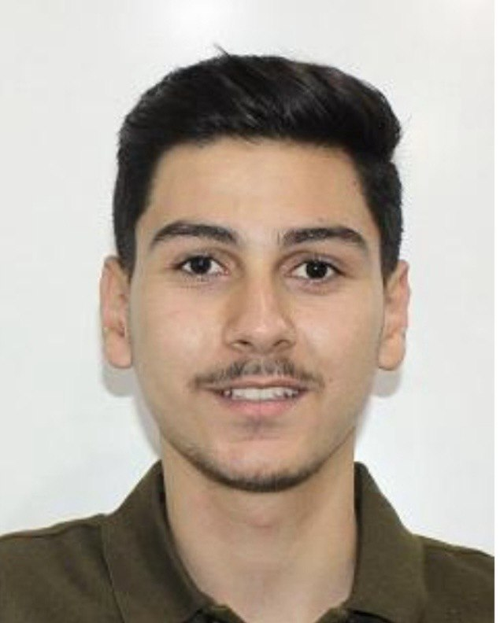

Major: Cybersecurity
Academic Level: Third Year
Email: arbakerzaatar24@cit.just.edu.jo
| Name | Website |
|---|---|
| C++ | isocpp.org |
| Python | python.org |
| Wireshark | wireshark.org |
| Nmap | nmap.org |
In four years, I see myself working as a penetration tester at a company that cares about security. I want to find weaknesses in systems and networks before real attackers do. I plan to earn certifications like Security+ and OSCP to improve my skills. I am also interested in cloud security and would like to learn more about it. One day, I might continue my studies with a master's degree in cybersecurity.